import numpy as np
import heartpy as hp
import pandas as pd
import matplotlib.pyplot as plt
df = pd.read_csv('raw_ppg.csv')Analysing Smartwatch Data
This notebook gives an overview of how to use HeartPy in the analysis of raw PPG data taken from a commercial (Samsung) smartwatch device.
A signal measured this way contains a lot more noise when compared to a typical PPG sensor on the fingertip or earlobe, where perfusion is much easier to measure than on the wrist.
Analysing such a signal requires some additional steps as described in this notebook.
First let’s load up the dependencies and the data file
df.keys()Index(['ppg', 'timer'], dtype='object')Exploring data file
Let’s explore the data file to get an idea of what we’re working with.
plt.figure(figsize=(12,6))
plt.plot(df['ppg'].values)
plt.show()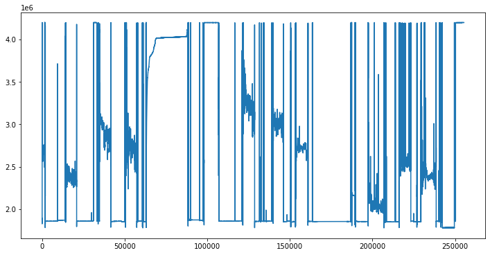
Ok..
There seems to be intermittent sections of PPG dotted between non-signals (periods where the sensor was not recording).
For now let’s slice the first signal section and see what’s up. Later on I’ll show you how to exclude non-signal sections automatically.
signal = df['ppg'].values[14500:20500]
timer = df['timer'].values[14500:20500]
plt.plot(signal)
plt.show()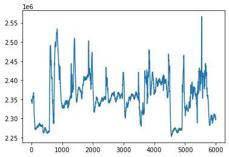
Now we need to know the sampling rate
The sampling rate is the one measure to rule them all. It is used to compute all others.
HeartPy has several ways of getting the sample rate from timer columns. Let’s look at the format of the timer column to see what we’re working with.
timer[0:20]array(['11:10:57.978', '11:10:58.078', '11:10:58.178', '11:10:58.279',
'11:10:58.379', '11:10:58.479', '11:10:58.579', '11:10:58.679',
'11:10:58.779', '11:10:58.879', '11:10:58.980', '11:10:59.092',
'11:10:59.180', '11:10:59.283', '11:10:59.381', '11:10:59.481',
'11:10:59.582', '11:10:59.681', '11:10:59.781', '11:10:59.882'],
dtype=object)So, the format seems to be ‘hours:minutes:seconds.miliseconds’
HeartPy comes with a datetime function that can work with date- and time-strings called get_samplerate_datetime. Check the help to see how it works:
help(hp.get_samplerate_datetime)Help on function get_samplerate_datetime in module heartpy.datautils:
get_samplerate_datetime(datetimedata, timeformat='%H:%M:%S.%f')
determine sample rate based on datetime
Function to determine sample rate of data from datetime-based timer
list or array.
Parameters
----------
timerdata : 1-d numpy array or list
sequence containing datetime strings
timeformat : string
the format of the datetime-strings in datetimedata
default : '%H:%M:%S.f' (24-hour based time including ms: e.g. 21:43:12.569)
Returns
-------
out : float
the sample rate as determined from the timer sequence provided
Examples
--------
We load the data like before
>>> data, timer = load_exampledata(example = 2)
>>> timer[0]
'2016-11-24 13:58:58.081000'
Note that we need to specify the timeformat used so that datetime understands
what it's working with:
>>> round(get_samplerate_datetime(timer, timeformat = '%Y-%m-%d %H:%M:%S.%f'), 3)
100.42
#Seems easy enough, right? Now let's determine the sample rate
sample_rate = hp.get_samplerate_datetime(timer, timeformat = '%H:%M:%S.%f')
print('sampling rate is: %.3f Hz' %sample_rate)sampling rate is: 9.986 HzThat’s pretty low.
The sample rate is quite low but to conserve power this is what many smart watches work with. For determining the BPM this is just fine, but any heart rate variability (HRV) measures are likely not going to be super accurate. Depending on your needs it may still be fine, though.
A second consideration with sampling rate is whether it’s stable or not. Many devices including smart watches do many things at once. They run an OS that has other tasks besides measuring heart rate, so when measuring at 10Hz, the OS might not be ready exactly every 100ms to get a measurement. As such, the sampling rate might vary. Let’s visualise this.
from datetime import datetime
#let's create a list 'newtimer' to house our datetime objects
newtimer = [datetime.strptime(x, '%H:%M:%S.%f') for x in timer]
#let's compute the real distances from entry to entry
elapsed = []
for i in range(len(newtimer) - 1):
elapsed.append(1 / ((newtimer[i+1] - newtimer[i]).microseconds / 1000000))
#and plot the results
plt.figure(figsize=(12,4))
plt.plot(elapsed)
plt.xlabel('Sample number')
plt.ylabel('Actual sampling rate in Hz')
plt.show()
print('mean sampling rate: %.3f' %np.mean(elapsed))
print('median sampling rate: %.3f'%np.median(elapsed))
print('standard deviation: %.3f'%np.std(elapsed))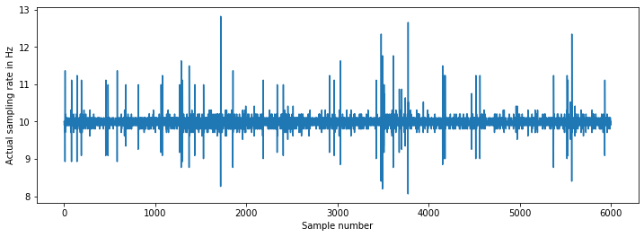
mean sampling rate: 9.987
median sampling rate: 10.000
standard deviation: 0.183That’s actually not bad!
The signal mean is close to 10Hz and shows a low variance. Sporadic peaks to 12Hz or dips to 9Hz indicate timer inaccuracies but they are infrequent.
For our current purposes this is just fine.
You could of course interpolate and resample the signal so that it has an exact sampling rate but the effects on computed measures are likely minimal. For now let’s just continue on.
#Let's plot 4 minutes of the segment we selected to get a view
#of what we're working with
plt.figure(figsize=(12,6))
plt.plot(signal[0:int(240 * sample_rate)])
plt.title('original signal')
plt.show()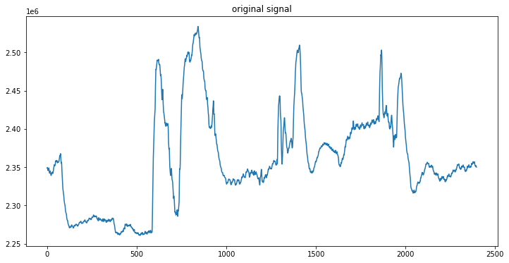
The first thing to note is that amplitude varies dramatically. Let’s run it through a bandpass filter and take out all frequencies that definitely are not heart rate.
We’ll take out frequencies below 0.7Hz (42 BPM) and above 3.5 Hz (210 BPM).
#Let's run it through a standard butterworth bandpass implementation to remove everything < 0.8 and > 3.5 Hz.
filtered = hp.filter_signal(signal, [0.7, 3.5], sample_rate=sample_rate,
order=3, filtertype='bandpass')
#let's plot first 240 seconds and work with that!
plt.figure(figsize=(12,12))
plt.subplot(211)
plt.plot(signal[0:int(240 * sample_rate)])
plt.title('original signal')
plt.subplot(212)
plt.plot(filtered[0:int(240 * sample_rate)])
plt.title('filtered signal')
plt.show()
plt.figure(figsize=(12,6))
plt.plot(filtered[0:int(sample_rate * 60)])
plt.title('60 second segment of filtered signal')
plt.show()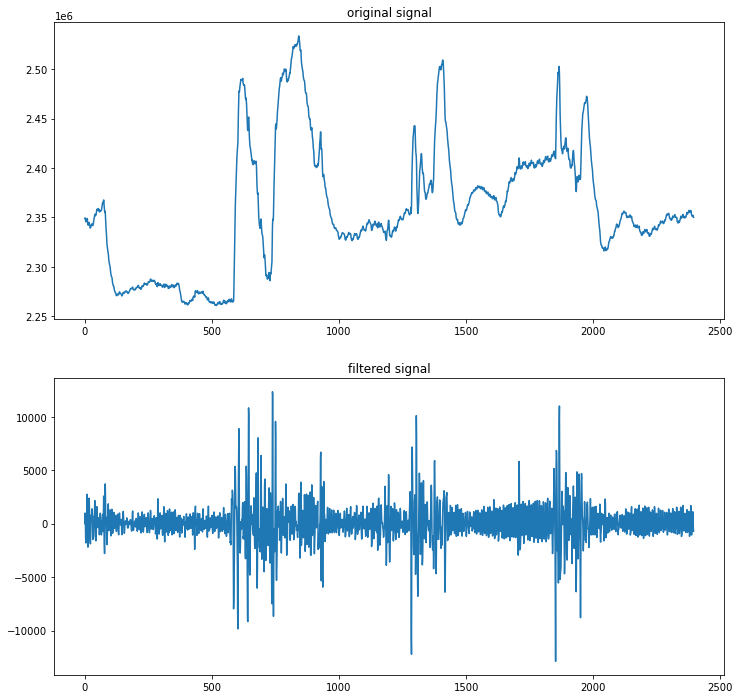
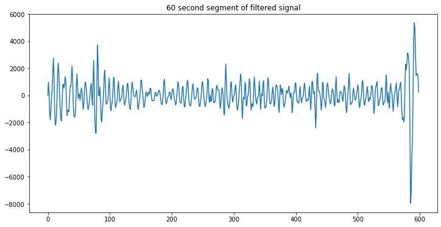
Still low quality but at least the heart rate is quite visible now!
#let's resample to ~100Hz as well
#10Hz is low for the adaptive threshold analysis HeartPy uses
from scipy.signal import resample
resampled = resample(filtered, len(filtered) * 10)
#don't forget to compute the new sampling rate
new_sample_rate = sample_rate * 10#run HeartPy over a few segments, fingers crossed, and plot results of each
for s in [[0, 10000], [10000, 20000], [20000, 30000], [30000, 40000], [40000, 50000]]:
wd, m = hp.process(resampled[s[0]:s[1]], sample_rate = new_sample_rate,
high_precision=True, clean_rr=True)
hp.plotter(wd, m, title = 'zoomed in section', figsize=(12,6))
hp.plot_poincare(wd, m)
plt.show()
for measure in m.keys():
print('%s: %f' %(measure, m[measure]))c:\python37\lib\site-packages\heartpy-1.2.6-py3.7.egg\heartpy\visualizeutils.py:119: UserWarning: Matplotlib is currently using module://ipykernel.pylab.backend_inline, which is a non-GUI backend, so cannot show the figure.
c:\python37\lib\site-packages\heartpy-1.2.6-py3.7.egg\heartpy\visualizeutils.py:298: UserWarning: Matplotlib is currently using module://ipykernel.pylab.backend_inline, which is a non-GUI backend, so cannot show the figure.
c:\python37\lib\site-packages\heartpy-1.2.6-py3.7.egg\heartpy\visualizeutils.py:119: UserWarning: Matplotlib is currently using module://ipykernel.pylab.backend_inline, which is a non-GUI backend, so cannot show the figure.
c:\python37\lib\site-packages\heartpy-1.2.6-py3.7.egg\heartpy\visualizeutils.py:298: UserWarning: Matplotlib is currently using module://ipykernel.pylab.backend_inline, which is a non-GUI backend, so cannot show the figure.
c:\python37\lib\site-packages\heartpy-1.2.6-py3.7.egg\heartpy\visualizeutils.py:119: UserWarning: Matplotlib is currently using module://ipykernel.pylab.backend_inline, which is a non-GUI backend, so cannot show the figure.
c:\python37\lib\site-packages\heartpy-1.2.6-py3.7.egg\heartpy\visualizeutils.py:298: UserWarning: Matplotlib is currently using module://ipykernel.pylab.backend_inline, which is a non-GUI backend, so cannot show the figure.
c:\python37\lib\site-packages\heartpy-1.2.6-py3.7.egg\heartpy\visualizeutils.py:119: UserWarning: Matplotlib is currently using module://ipykernel.pylab.backend_inline, which is a non-GUI backend, so cannot show the figure.
c:\python37\lib\site-packages\heartpy-1.2.6-py3.7.egg\heartpy\visualizeutils.py:298: UserWarning: Matplotlib is currently using module://ipykernel.pylab.backend_inline, which is a non-GUI backend, so cannot show the figure.
c:\python37\lib\site-packages\heartpy-1.2.6-py3.7.egg\heartpy\visualizeutils.py:119: UserWarning: Matplotlib is currently using module://ipykernel.pylab.backend_inline, which is a non-GUI backend, so cannot show the figure.
c:\python37\lib\site-packages\heartpy-1.2.6-py3.7.egg\heartpy\visualizeutils.py:298: UserWarning: Matplotlib is currently using module://ipykernel.pylab.backend_inline, which is a non-GUI backend, so cannot show the figure.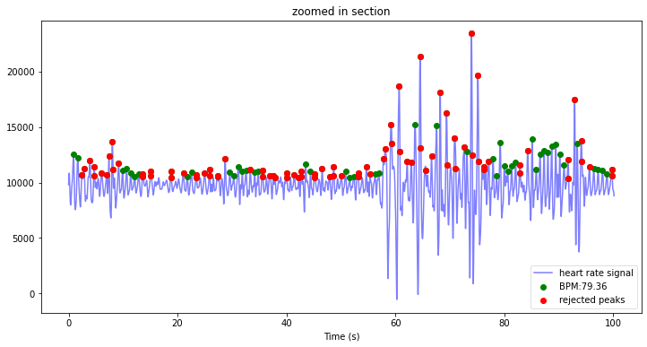
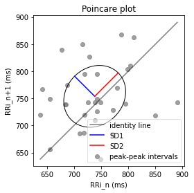
bpm: 79.359496
ibi: 756.053189
sdnn: 64.994392
sdsd: 47.662905
rmssd: 75.816447
pnn20: 0.687500
pnn50: 0.562500
hr_mad: 38.056933
sd1: 52.474660
sd2: 61.238831
s: 10095.466648
sd1/sd2: 0.856885
breathingrate: 0.166667
bpm: 76.276784
ibi: 786.608936
sdnn: 64.426442
sdsd: 33.842026
rmssd: 52.451344
pnn20: 0.706897
pnn50: 0.258621
hr_mad: 25.028467
sd1: 36.269742
sd2: 57.296852
s: 6528.675837
sd1/sd2: 0.633015
breathingrate: 0.233333
bpm: 80.140527
ibi: 748.684870
sdnn: 47.606192
sdsd: 21.648073
rmssd: 37.633326
pnn20: 0.646154
pnn50: 0.184615
hr_mad: 27.042700
sd1: 26.454880
sd2: 57.468399
s: 4776.224835
sd1/sd2: 0.460338
breathingrate: 0.200000
bpm: 77.007966
ibi: 779.140179
sdnn: 67.149279
sdsd: 26.025919
rmssd: 40.921120
pnn20: 0.620253
pnn50: 0.151899
hr_mad: 35.549817
sd1: 28.690814
sd2: 67.970221
s: 6126.485560
sd1/sd2: 0.422109
breathingrate: 0.266667
bpm: 74.808472
ibi: 802.048196
sdnn: 72.275896
sdsd: 19.707483
rmssd: 32.333149
pnn20: 0.514286
pnn50: 0.085714
hr_mad: 23.028467
sd1: 22.852642
sd2: 37.011862
s: 2657.218189
sd1/sd2: 0.617441
breathingrate: 0.266667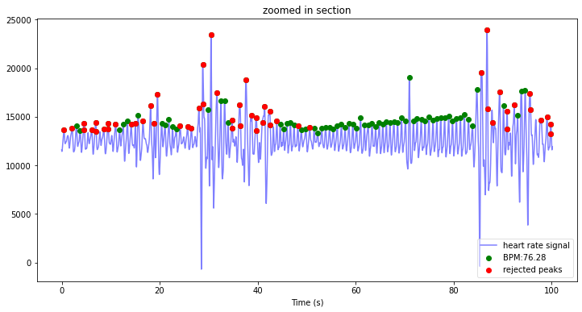
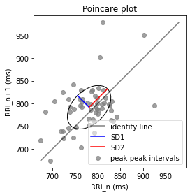
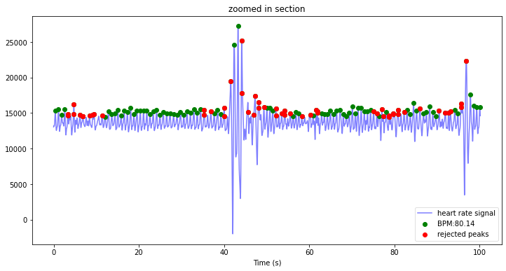
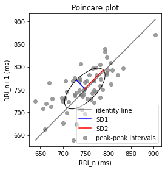
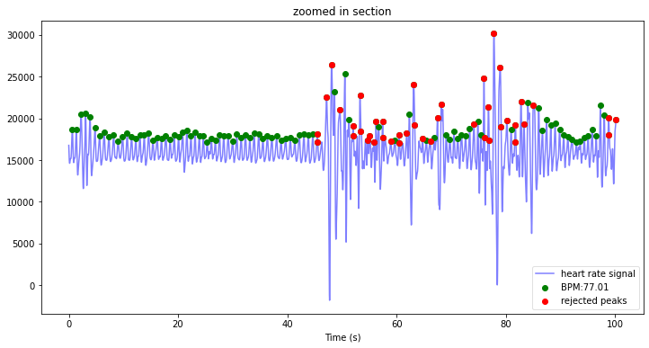
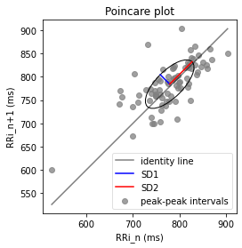
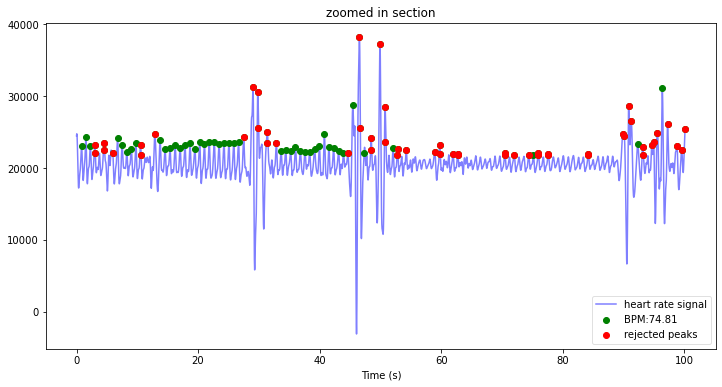
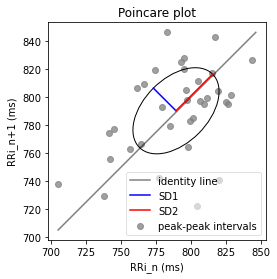
That seems a reasonable result. By far the most peaks are marked correctly, and most peaksin noisy sections (low confidence) are simply rejected.
clean_rr uses by default quotient-filtering, which is a bit aggressive.
You can set ‘iqr’ or ‘z-score’ with the clean_rr_method flag.
Finally let’s look at a way to extract signal section and exclude non-signal sections automatically.
raw = df['ppg'].values
plt.plot(raw)
plt.show()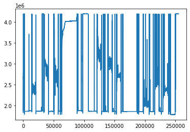
import sys
from scipy.signal import resample
windowsize = 100
std = []
for i in range(len(raw) // windowsize):
start = i * windowsize
end = (i + 1) * windowsize
sliced = raw[start:end]
try:
std.append(np.std(sliced))
except:
print(i)
plt.plot(std)
plt.show()
plt.plot(raw)
plt.show()
plt.plot(raw[0:(len(raw) // windowsize) * windowsize] - resample(std, len(std)*windowsize))
plt.show()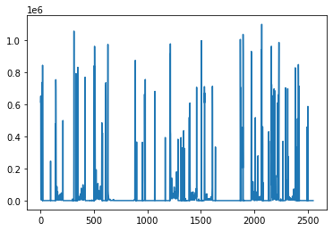

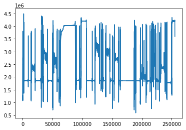
Hmmm, not much luck yet, but an idea:
(len(raw) // windowsize) * windowsize255300mx = np.max(raw)
mn = np.min(raw)
global_range = mx - mn
windowsize = 100
filtered = []
for i in range(len(raw) // windowsize):
start = i * windowsize
end = (i + 1) * windowsize
sliced = raw[start:end]
rng = np.max(sliced) - np.min(sliced)
if ((rng >= (0.5 * global_range))
or
(np.max(sliced) >= 0.9 * mx)
or
(np.min(sliced) <= mn + (0.1 * mn))):
for x in sliced:
filtered.append(0)
else:
for x in sliced:
filtered.append(x)
plt.figure(figsize=(12,6))
plt.plot(raw)
plt.show()
plt.figure(figsize=(12,6))
plt.plot(filtered)
plt.show()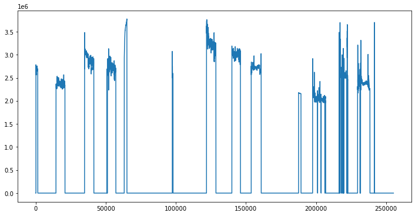
That works! A quick and dirty automatic extraction of signal sections
For this we use a window function and for each window test whether it:
- Has a range that is at least 50% of range of the raw signal
- OR
- Has a maximum that is 90% the raw signal’s maximum
- OR
- Has a minimum that is the minimum + 10% of the raw signal
This works well enough